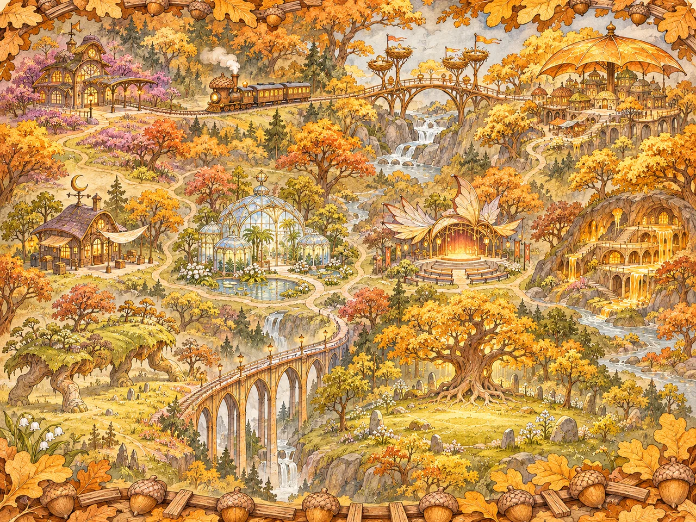

Экспресс «Тысяча Желудей»
Карты и фигурки ведущего
Игровой комплект
4 игрока · 3 игрока · основной состав · 3 игрока, без героя «Борис Камнелист» · 3 игрока, без героя «Ника Вереск» · 3 игрока, без героя «Яра Медуница»
Карта кампании

Карты и фигурки ведущего
4 игрока · 3 игрока · основной состав · 3 игрока, без героя «Борис Камнелист» · 3 игрока, без героя «Ника Вереск» · 3 игрока, без героя «Яра Медуница»
